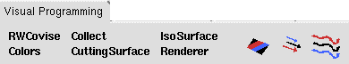
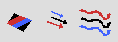

( )
| ... |
The Quick Start feature contains
the names of frequently used modules and icons for 3 frequently used module
groups. You can drag the module names or the icons to the canvas.
The list of favourite modules is read from the COVISE configuration file.
|  |
A short description of the Tool Bar
icons is given in the following table:
| Click on this icon to disconnect the tool bar from the MapEditor and display it in a separate window (tear off). You can do the same the other way around to reconnect the tool bar | |
| Quit and exit COVISE (see also option File > Quit in menu bar) | |
| Clear the canvas and reset all things (see also option File > New in menu bar) | |
| Load a new map into COVISE (see also option File > Open in menu bar) | |
| Save the current map (see also option File > Save in menu bar) | |
| Add a new host (you can work with distributed modules - see also option CSCW > AddHost in menu bar) | |
| Add a new partner (you can work in a collaborative environment - see also option CSCW > AddPartner in menu bar) | |
| Execute the map from the beginning (see also option Execution in menu bar) | |
|
( ) |
Undo (delete/add line, delete/add node, restore parameter settings, copy/move nodes, restore old session) - for details see note below |
| Context sensitive help, click on this icon and you get a question mark, go to the desired area of the MapEditor and click there. You will receive a short information about the meaning of this area, and you can call for more help, if necessary. | |
| Click on this symbol and netscape is started with the homepage of HLRS | |
| Click on this symbol and netscape is started with the homepage of VISENSO |
Note (Undo feature):
|
The following actions can be undone (undo icon = ):
(If you undo a delete node action you have to repeat the undo to get the connection lines.) (As the controller doesn't know about stored delta values for scalars mapped to sliders they can't be restored) |
The Quick Start feature provides 2 possibilities:
| RWCovise ... | Quickstart of Modules: These are the names
of your favourite modules. You can drag them into the canvas.
Specify your favourite modules in the COVISE configuration file. |
|  | Quickstart of Module Groups: Select an
icon for one of 3 predefined module groups
(CuttingSurface-Colors-Collect / CuttingSurface-VectorField-VectorScal-Colors-Collect / Tracer-Colors-Collect..., see Module Grouping / Quickstart Module Groups). You can drag these groups into the canvas. |